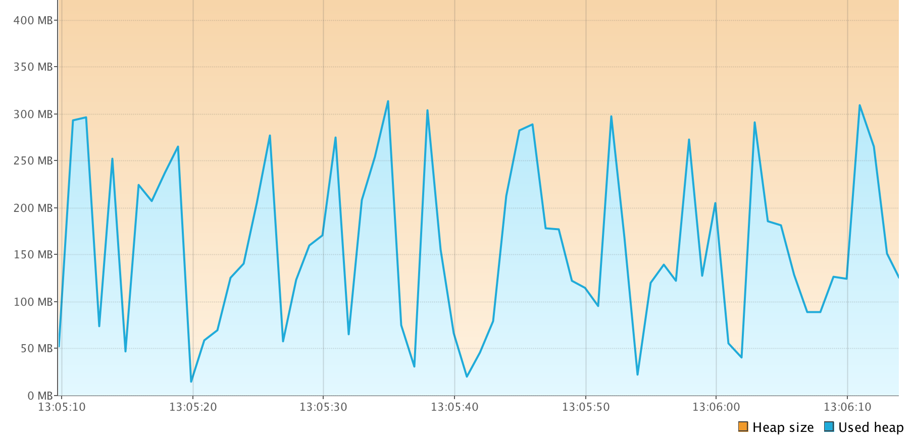
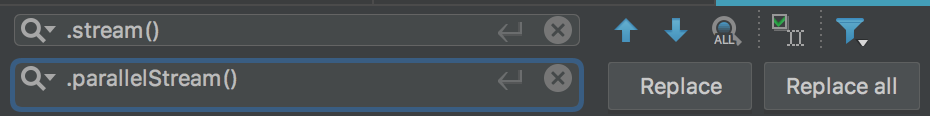

Feature-driven -> Cadence-driven
Feature-driven:
- Java 7 - Strings in Switch Statements
- Java 8 - Project Lambda
- Java 9 - Project JigSaw
- ...
Cadence-driven:
- Java 10 - 3.18
- Java 11 - 9.18
- Java 12 - 3.19
- ...
LTS Releases:
Java 7
Java 8
Java 9
Java 10
Java 11
Java 12
...
Java 17
#1 Conditional Stream Termination
List<LocalDate> getDates()
[2012-02-02, 2012-03-02, 2012-04-02, (...)]
Task: take all dates before XXX
getDates().stream()
.filter(date -> date.isBefore(LocalDate.of(2012, 4, 4)))
.map(...)
.forEach(System.out::println);
- Works properly but evaluates the whole stream
- Doesn't work with infinite streams
getDates().stream()
.peek(System.out::println)
.filter(date -> date.isBefore(LocalDate.of(2012, 4, 4)))
.map(...)
.forEach(...);
2012-02-02,
2012-03-02,
2012-04-02,
-- POTENTIAL CUT OFF POINT --
2012-05-02,
2012-06-02,
2012-07-02,
2012-08-02,
2012-09-02,
2012-10-02,
2012-11-02,
2012-12-02,
2013-01-02,
2013-02-02,
2013-03-02,
2013-04-02,
2013-05-02,
2013-06-02,
2013-07-02,
2013-08-02,
2013-09-02,
2013-10-02,
2013-11-02,
2013-12-02,
...
Solution: migrate to JDK9+
Stream#takeWhile/dropWhile
- [JDK8] don't use Stream API if you want to be able to break out of it
- [JDK8] use limit() to cap the number of fetched elements (if applicable)
getDates().stream()
.filter(date -> date.isBefore(LocalDate.of(2014, 4, 4)))
.map(...)
.forEach(System.out::println);
getDates().stream()
.takeWhile(date -> date.isBefore(LocalDate.of(2014, 4, 4)))
.map(...)
.forEach(System.out::println);
- The stream terminates as soon the first mismatch is encountered
Streams ~ Lazy Sequences
As performant as imperative equivalents (time complexity)
In theory.
return getUsers().stream()
.flatMap(u -> u.getAddresses().stream())
.filter(address -> address.contains("1"))
.findAny()
List<String> addresses = new ArrayList<>();
for (User u : getUsers()) {
for (String address : u.getAddresses()) {
if (address.contains("1")) {
return address; // short-circuts the ongoing iteration
}
}
}
static List<User> getUsers() { // db fetch stub
return List.of(new User(List.of("a1","a2","a3","a4","a5")));
}
Task: take a first encountered address of a first encountered user
getUsers().stream()
.flatMap(u -> u.getAddresses().stream())
.findAny();
getUsers().stream()
.flatMap(u -> u.getAddresses().stream())
.peek(System.out::println)
.findAny();
getUsers().stream()
.flatMap(u -> getAllAddresses(u)) // large/infinite stream
.peek(System.out::println)
.findAny();

It gets worse once we start adding more operations:
getUsers().stream()
.flatMap(u -> u.getAddresses().stream())
.map(a -> {
System.out.println("making a super expensive call now");
return 42;
})
.findAny();
making a super expensive call now
making a super expensive call now
making a super expensive call now
making a super expensive call now
making a super expensive call now
Solution: implement your own Spliterator-based lazy flatMap()
Practical Solution: migrate to JDK10+
- JDK-8 Solution: don't use Stream API if you need nested collections to be evaluated lazily
- JDK-9 Solution: see above
List<List<String>> list = List.of(
List.of("1", "2"),
List.of("3", "4", "5", "6", "7"));
list.stream()
.flatMap(Collection::stream)
.forEach(System.out::println);
1
2
3
4
5
6
7
Stream.of("1", "2", "3", "4", "5", "6", "7")
.takeWhile(i -> !i.equals("4"))
.forEach(System.out::println);
1
2
3
List<List<String>> list = List.of(
List.of("1", "2"),
List.of("3", "4", "5", "6", "7"));
list.stream()
.flatMap(Collection::stream)
.takeWhile(i -> !i.equals("4"))
.forEach(System.out::println);
1
2
3
5
6
7
Solution: migrate to JDK10+
#4 Lambda Expressions vs. Checked Exceptions
java.util.function.Function
@FunctionalInterface
public interface Function<T, R> {
/**
* Applies this function to the given argument.
*
* @param t the function argument
* @return the function result
*/
R apply(T t);
}
Solution: use helper wrappers
getUsers().stream()
.map(unchecked(u -> new URL(u.webpage)))
.collect(Collectors.toList());
A bound of the form “throws α” is purely informational: it directs resolution to optimize the instantiation of “α” so that, if possible, it is not a checked exception type. (…)
Otherwise, if the bound set contains “throws αi”, and the proper upper bounds of “αi” are, at most, Exception, Throwable, and Object, then Ti = RuntimeException.
Simply put:
Every T in “<T extends Throwable>” is generously inferred to be a RuntimeException if a more specific type can't be inferred.
static void rethrow(Exception t) throws Exception {
throw t;
}
static <T extends Exception> void rethrow(Exception t) throws T {
throw t; // Unhandled exception: java.lang.Exception
}
static <T extends Exception> void rethrow(Exception t) throws T {
throw (T) t; // Just cast it, #YOLO
}
public static void main(String[] args) {
rethrow(new Exception(":>")); // no try-catch needed :)
}
Let's put that into practice
public interface ThrowingFunction<T, R> {
R apply(T t) throws Exception;
}
static <T, R> Function<T, R> sneaky(ThrowingFunction<T, R> f)
static <T, R> Function<T, R> sneaky(ThrowingFunction<T, R> f) {
return t -> {
try {
return f.apply(t);
} catch (Exception ex) {
return ThrowingFunction.sneakyThrow(ex);
}
};
}
getUsers().stream()
.map(sneaky(u -> new URL(u.webpage)))
.map(sneaky(url -> url.openConnection())
.map(sneaky(c -> c.getInputStream())));
Parallel processing made easy™
Parallel processing made easy (?)™
Sequential
getDates().stream()
.map(...)
.forEach(System.out::println);
Parallel
getDates().parallelStream()
.map(...)
.forEach(System.out::println);
Ctrl + R

Not a very good idea.
Multiple questions arise:
...but where are those tasks run?
...in the cloud?
...in the blockchain?
...how to provide a custom thread pool?
...what's the maximum number of tasks executed in parallel?
...
Code inspection reveals:
static final ForkJoinPool common;
- Implementation detail
- A thread pool that is used for execution of parallel streams is unspecified
public final ForkJoinTask<V> fork()
Arranges to asynchronously execute this task in the pool the current task is running in (...)
ForkJoinPool customPool = new ForkJoinPool(42);
customPool.submit(
() -> getDates().parallelStream().forEach(e -> {}));
The size of the computation will be in proportion to the common pool and not the custom pool.
Fixed in JDK10 - https://bugs.openjdk.java.net/browse/JDK-8190974
ForkJoinPool Settings:
- The parallelism level
- ForkJoinWorkerThreadFactory
- UncaughtExceptionHandler
- asyncMode
Since JDK 9:
- corePoolSize
- maximumPoolSize
- minimumRunnable
- saturation allowed
- keepAliveTime
Which is faster? Sequential or Parallel?
Sequential
Random rand = new Random();
int[] array = new int[90000000];
Arrays.stream(array)
.map(i -> rand.nextInt())
.boxed()
.collect(Collectors.toList());
Which is faster? Sequential or Parallel?
Parallel
Random rand = new Random();
int[] array = new int[90000000];
Arrays.stream(array).parallel()
.map(i -> rand.nextInt())
.boxed()
.collect(Collectors.toList());
Parallel - doesn't always mean faster
/**
* Returns an infinite sequential unordered stream where each element is
* generated by the provided {@code Supplier}. This is suitable for
* generating constant streams, streams of random elements, etc.
*
* @param <T> the type of stream elements
* @param s the {@code Supplier} of generated elements
* @return a new infinite sequential unordered {@code Stream}
*/
public static<T> Stream<T> generate(Supplier<T> s)
Stream.generate(() -> 42)
.forEach(System.out::println);
// 42
// 42
// 42
// ...
Stream.generate(rand::nextInt)
.forEach(System.out::println);
// ${some.random.value1}
// ${some.random.value2}
// ${some.random.value3}
// ...
Stream.generate(new Supplier<Integer>() {
private int value;
@Override
public Integer get() {
return value++;
}})
.limit(8)
.forEach(System.out::println);
1
2
3
4
5
6
7
8
Stream.generate(new Supplier<Integer>() {
private int value;
@Override
public Integer get() {
return value++;
}}).parallel()
.limit(8)
.forEach(System.out::println);
0
2
4
7
6
8
1
3
Stream.generate(new Supplier<Integer>() {
private AtomicInteger value = new AtomicInteger();
@Override
public Integer get() {
return value.getAndIncrement();
}}).parallel()
.limit(20)
.forEach(System.out::println);
0
1
2
3
4
5
7
6
...
List<Integer> result = Stream.generate(new Supplier<Integer>() {
private final AtomicInteger value = new AtomicInteger();
@Override
public Integer get() {
return value.getAndIncrement();
}})
.parallel()
.peek(System.out::println)
.limit(4)
.collect(Collectors.toList());
System.out.println("results: " + result);
// 0
// 6
// 7
// 5
// 3
// 4
// 2
// 1
// 8
// 9
results: [5, 6, 0, 7]
/**
* Returns an infinite sequential UNORDERED stream where each element is
* generated by the provided Supplier.
*/
User user = ...
Optional.ofNullable(user)
.map(o -> o.getAddress()) // getAddress() returns null
.ifPresent(System.out::println);
//
Nulls are interpreted by Optional as Optional.empty()
scala> Some(null)
users.stream()
.map(o -> o.getAddress())
.map(this::handleAddress) // handles null properly
.findAny()
...
users.stream()
.findAny()
.map(o -> o.getAddress())
.map(this::handleAddress) // null never makes it here
...
Two different results!
Key takeaway:
Java sucks, let's PHP
It's worth paying attention and migrating to new minor JDK releases. Small things matter.
Also, read the docs.